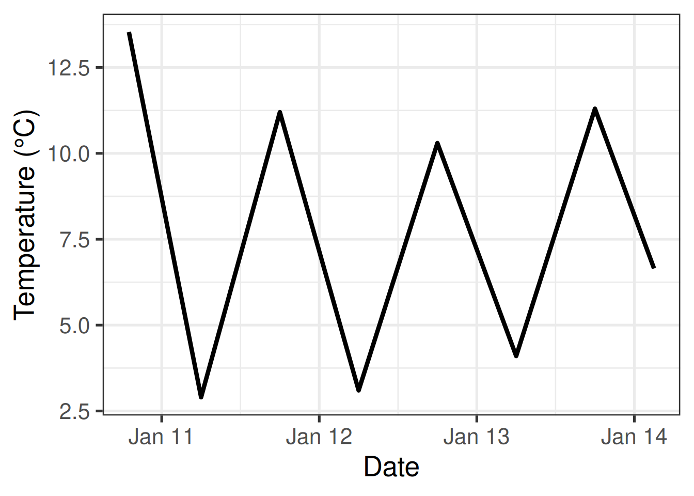
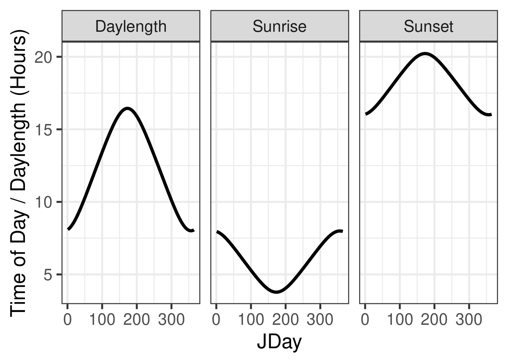
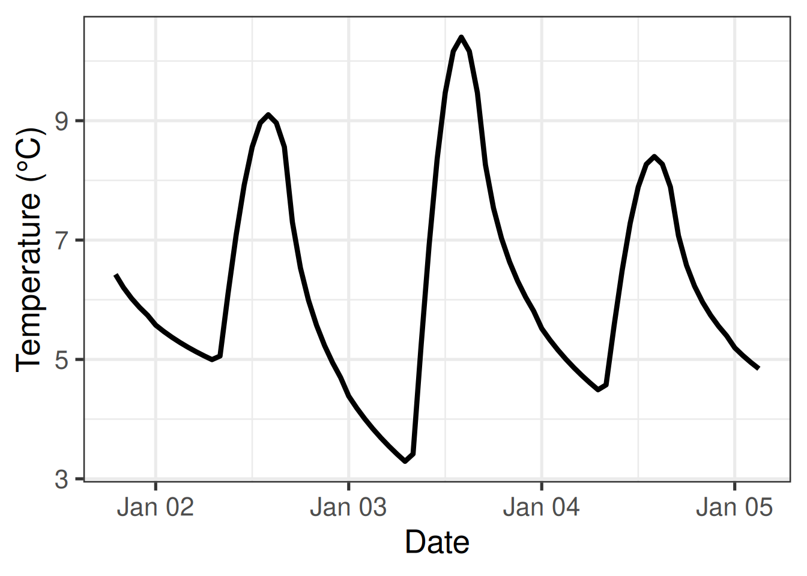
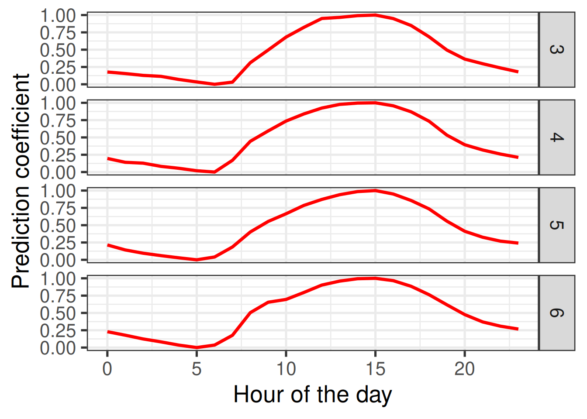
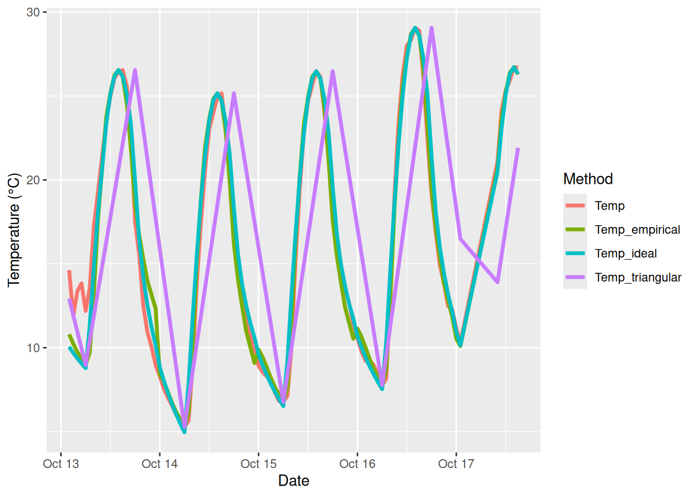

Chapter 8 Making hourly temperatures
Learning goals for this lesson
- Understand why we often need hourly temperature data and why we need ways of making them out of daily data
- Understand some basic algorithms for making hourly data from daily minimum and maximum temperatures
- Understand how we can make use of observed hourly temperatures to produce our own empirical transfer function that can make hourly from daily data
- Be able to use the respective
chillRfunctions that implement these steps
8.1 Generating hourly temperatures
Now that we have the Chilling Hours function coded, we can move on to the next problem - we don’t usually have hourly temperature data. Most sources only provide daily data, usually including minimum and maximum temperature of the day, from which we can’t directly calculate Chilling Hours. This has long been a challenge, and people found a bunch of suboptimal solutions for this. For example, some reseachers calculated Chilling Hours for a certain number of days based on high-resolution data and then related the number of Chilling Hours to the minimum temperature (Crossa-Raynaud, 1955), or they made a more complex regression equation.
When computing became easier, people started assuming that the daily minimum temperature occurred at a certain time of day, and the maximum temperature at another time. For hours between these times, they interpolated linearly, which resulted in a ‘triangular’ daily temperature pattern (Baldocchi & Wong, 2008) (Link). Here’s what this looks like:

This may not be a totally unreasonable approximation, but of course this isn’t particularly realistic. The rate of temperature increase in the morning is not the same as the rate of decrease in the evening. Besides, in particular the time of the lowest daily temperature varies considerably throughout the year (unless you’re close to the equator), and it would be good to consider this.
8.1.1 Idealized daily temperature curves
A major step forward was taken when Dale E. Linvill from Clemson University in South Carolina (USA) published a paper (Linvill, 1990) (Link) that described the daily temperature curve using a combination of two mathematical equations: a sine curve to describe daytime warming, and a logarithmic decay function for nighttime cooling. The transition points between the two parts were determined by sunrise and sunset, and the duration of the parts was related to daylength. The equations in this paper paved the way for making more realistic daily temperature curves than could easily be constructed before. This of course doesn’t mean that all studies that came later used these equations - very far from it! This is mainly because people have either not been aware of these equations, or they were lacking the data processing skills to use them in their work.
One aspect that made Linvill’s equations hard to use across different locations was the dependency on sunrise and sunset times. Of course, tables of these times can be produced from observations everywhere, but modelers would greatly benefit from a generic method to determine these. Fortunately, at least for locations without major topographic features, sunrise and sunset times can be calculated based on what we know about the geometry of our solar system. As agricultural scientists, this doesn’t come naturally to us, but we can make use of what researchers in other fields have found out. The procedures in chillR rely on equations produced by Spencer (1971) (Link) and Almorox et al. (2005) (Link). Don’t ask me now how exactly these equations work, since I don’t remember… It was enough to figure this out once, in the early days of my chilling analysis career, code it into an R function (or actually first a JSL function, but that’s another story) and then just rely on that function for all subsequent work.
Putting together all these functions (Almorox et al., 2005; Linvill, 1990; Spencer, 1971) basically worked the same way as what we’ve just seen with the development of the CH() function and its subsequent embedding in the sum_CH function - just that the individual components were a bit more complex. The result was a function that can produce credible daily temperature curves based only on the latitude of the location of interest.
The code below provides some use examples of the daylength function, which is involved in producing daily temperature curves. Let’s make plots of the sunrise time, sunset time and daylength at Klein-Altendorf (Latitude: 50.4°N) over the course of the year.
require(chillR)
require(ggplot2)
require(reshape2)
Days <- daylength(latitude = 50.4, JDay = 1:365)
Days_df <-
data.frame(
JDay = 1:365,
Sunrise = Days$Sunrise,
Sunset = Days$Sunset,
Daylength = Days$Daylength
)
Days_df <- pivot_longer(Days_df,cols=c(Sunrise:Daylength))
ggplot(Days_df, aes(JDay, value)) +
geom_line(lwd = 1.5) +
facet_grid(cols = vars(name)) +
ylab("Time of Day / Daylength (Hours)") +
theme_bw(base_size = 20)
Here, JDay is the so-called Julian Date, which basically means the Day of the Year. January 1st ist JDay 1, and December 31st either JDay 365 (in normal years) or JDay 366 (in leap years). I’m using the ggplot2 package, which is a really elegant tool for making attractive plots. We’ll get to talk a bit more about how this works. The ideal input for this is a data.frame, so I converted the outputs of the daylength() function into a data.frame first. I also had to convert the data.frame, so that the three time series (Sunrise, Sunset and Daylength) were stacked on top of each other. That was accomplished by the pivot_longer command of the tidyr package.
These daily dynamics are integrated in the stack_hourly_temps() function in chillR. This function takes as input a dataset of daily minimum and maximum temperatures (must have columns called Tmin and Tmax, as well as Year, Month and Day). It also needs to be told the latitude of the place of interest. With these inputs, we can apply the various equations we just discussed and calculate hourly temperatures. Optionally, we can also choose to output, in addition, the sunrise and sunset times.
To illustrate how this works, we’ll use another dataset that comes with chillR: KA_weather. This is a data.frame that contains temperature data for the experimental station of the University of Bonn at Klein-Altendorf. Here are the first 10 rows of the KA_weather dataset:
| Year | Month | Day | Tmax | Tmin |
|---|---|---|---|---|
| 1998 | 1 | 1 | 8.2 | 5.1 |
| 1998 | 1 | 2 | 9.1 | 5.0 |
| 1998 | 1 | 3 | 10.4 | 3.3 |
| 1998 | 1 | 4 | 8.4 | 4.5 |
| 1998 | 1 | 5 | 7.7 | 4.5 |
| 1998 | 1 | 6 | 8.1 | 4.4 |
| 1998 | 1 | 7 | 12.0 | 6.9 |
| 1998 | 1 | 8 | 11.2 | 8.6 |
| 1998 | 1 | 9 | 13.9 | 8.5 |
| 1998 | 1 | 10 | 14.5 | 3.6 |
And this is how we can convert this to hourly temperatures based on the idealized curve:
stack_hourly_temps(KA_weather, latitude=50.4)
| Year | Month | Day | Tmax | Tmin | JDay | Hour | Temp |
|---|---|---|---|---|---|---|---|
| 1998 | 1 | 5 | 7.7 | 4.5 | 5 | 3 | 4.844164 |
| 1998 | 1 | 5 | 7.7 | 4.5 | 5 | 4 | 4.746566 |
| 1998 | 1 | 5 | 7.7 | 4.5 | 5 | 5 | 4.656244 |
| 1998 | 1 | 5 | 7.7 | 4.5 | 5 | 6 | 4.572187 |
| 1998 | 1 | 5 | 7.7 | 4.5 | 5 | 7 | 4.493583 |
| 1998 | 1 | 5 | 7.7 | 4.5 | 5 | 8 | 4.569464 |
| 1998 | 1 | 5 | 7.7 | 4.5 | 5 | 9 | 5.384001 |
| 1998 | 1 | 5 | 7.7 | 4.5 | 5 | 10 | 6.139939 |
| 1998 | 1 | 5 | 7.7 | 4.5 | 5 | 11 | 6.787169 |
| 1998 | 1 | 5 | 7.7 | 4.5 | 5 | 12 | 7.282787 |
| 1998 | 1 | 5 | 7.7 | 4.5 | 5 | 13 | 7.593939 |
| 1998 | 1 | 5 | 7.7 | 4.5 | 5 | 14 | 7.700000 |
| 1998 | 1 | 5 | 7.7 | 4.5 | 5 | 15 | 7.593939 |
| 1998 | 1 | 5 | 7.7 | 4.5 | 5 | 16 | 7.282787 |
| 1998 | 1 | 5 | 7.7 | 4.5 | 5 | 17 | 6.591821 |
| 1998 | 1 | 5 | 7.7 | 4.5 | 5 | 18 | 6.168074 |
| 1998 | 1 | 5 | 7.7 | 4.5 | 5 | 19 | 5.870570 |
| 1998 | 1 | 5 | 7.7 | 4.5 | 5 | 20 | 5.641106 |
| 1998 | 1 | 5 | 7.7 | 4.5 | 5 | 21 | 5.454280 |
| 1998 | 1 | 5 | 7.7 | 4.5 | 5 | 22 | 5.296704 |
| 1998 | 1 | 5 | 7.7 | 4.5 | 5 | 23 | 5.160445 |
And here’s a plot of the data:

8.1.2 Empirical daily temperature curves
There are some locations where idealized daily temperature curves don’t work. For instance, some places where temperate fruit trees are grown feature rugged topography, so that trees may be shaded for part of the day. The pictures below show the region where I first started working on winter chill - the Jabal Al Akhdar (the Green Mountain) region in Oman. We investigated several oases in Wadi Muaydin, a deeply incised canyon. Near the top of the canyon, trees get a lot more sunlight than at the bottom of the valley, about 1000 m below.

Even without such mountains, it seems quite likely that the temperature curve in an orchard, which may feature its own microclimate, with shaded and sunny spots, with dew-covered grass or bare ground etc., may not closely resemble the curve drawn up by Linvill (1990) (Link).
In our first study on the Omani oases (Luedeling et al., 2009b) (Link), we didn’t address this issue very well (not even with the idealized daily curve yet), but we recently revisited this location, this time committed to doing this better. Here’s what we came up with (Buerkert et al., 2020) (Link):
First we need a dataset of hourly temperature data for the location of interest. This should cover a full year, and ideally multiple years. For the purpose of this exercise, we’ll use the
Winters_hours_gapsdataset, which is included inchillR. I collected this dataset in a walnut orchard near Winters, California. The temperature logger was attached directly to a tree branch, so I wouldn’t expect the data to precisely mirror the usual daily temperature curve.We now use the
Empirical_daily_temperature_curve()function to determine the typical pattern of hourly temperatures at this location. This is done separately for each month of the year (there may still be room for improvement here - this could be continuous and not broken down by months).
Let’s see what the results look like, in a table and a figure.
| Month | Hour | Prediction_coefficient |
|---|---|---|
| 3 | 0 | 0.1774859 |
| 3 | 1 | 0.1550693 |
| 3 | 2 | 0.1285651 |
| 3 | 3 | 0.1145597 |
| 3 | 4 | 0.0696064 |
| 3 | 5 | 0.0339583 |
| 3 | 6 | 0.0000000 |
| 3 | 7 | 0.0313115 |
| 3 | 8 | 0.3121959 |
| 3 | 9 | 0.4953232 |
| 3 | 10 | 0.6819674 |
| 3 | 11 | 0.8227423 |
| 3 | 12 | 0.9506491 |
| 3 | 13 | 0.9662604 |
| 3 | 14 | 0.9915996 |
| 3 | 15 | 1.0000000 |
| 3 | 16 | 0.9490319 |
| 3 | 17 | 0.8483098 |
| 3 | 18 | 0.6864529 |
| 3 | 19 | 0.4945415 |
| 3 | 20 | 0.3636642 |
| 3 | 21 | 0.2972377 |
| 3 | 22 | 0.2360349 |
| 3 | 23 | 0.1794802 |
| 4 | 0 | 0.1960789 |
| 4 | 1 | 0.1407018 |
| 4 | 2 | 0.1283250 |
| 4 | 3 | 0.0819307 |
| 4 | 4 | 0.0541415 |
| 4 | 5 | 0.0188241 |
| 4 | 6 | 0.0000000 |
| 4 | 7 | 0.1697052 |
| 4 | 8 | 0.4442722 |
| 4 | 9 | 0.5939797 |
| 4 | 10 | 0.7363923 |
| 4 | 11 | 0.8399804 |
| 4 | 12 | 0.9245702 |
| 4 | 13 | 0.9770693 |
| 4 | 14 | 0.9963131 |
| 4 | 15 | 1.0000000 |
| 4 | 16 | 0.9568107 |
| 4 | 17 | 0.8698369 |
| 4 | 18 | 0.7343896 |
| 4 | 19 | 0.5330597 |
| 4 | 20 | 0.3941038 |
| 4 | 21 | 0.3186075 |
| 4 | 22 | 0.2594569 |
| 4 | 23 | 0.2114486 |
ggplot(data = empi_curve[1:96, ], aes(Hour, Prediction_coefficient)) +
geom_line(lwd = 1.3,
col = "red") +
facet_grid(rows = vars(Month)) +
xlab("Hour of the day") +
ylab("Prediction coefficient") +
theme_bw(base_size = 20)
- We can now apply this set of coefficients to a daily dataset from the same location, which should give us a reasonable hourly temperature record for this orchard. For this, we can use the
Empirical_hourly_temperaturesfunction, which requires as inputs a set of hourly coefficients (such as the one we just made), and a daily temperature record (which includesTminandTmaxcolumns). Did I mention that you can always use the?to get help on how to use a function (e.g.?Empirical_hourly_temperatures).
So here’s how this works. Note that this also demonstrates use of the make_all_day_table function, which can fill gaps in daily or hourly temperature records and - as in this case - summarize hourly records into daily minimum and maximum temperatures:
coeffs <- Empirical_daily_temperature_curve(Winters_hours_gaps)
Winters_daily <-
make_all_day_table(Winters_hours_gaps, input_timestep = "hour")
Winters_hours <- Empirical_hourly_temperatures(Winters_daily, coeffs)This is it really. Let’s plot the result to see what it looks like. We can also compare the results to those of the triangular function and the idealized temperature curve. In this example, we also have the actual observed temperatures, so we can use these to validate the results as well.
First, let’s simplify the data a bit, so that it gets easier to use:
require(reshape2)
Winters_hours <- Winters_hours[, c("Year", "Month", "Day", "Hour", "Temp")]
colnames(Winters_hours)[ncol(Winters_hours)] <- "Temp_empirical"
Winters_ideal <-
stack_hourly_temps(Winters_daily, latitude = 38.5)$hourtemps
Winters_ideal <- Winters_ideal[, c("Year", "Month", "Day", "Hour", "Temp")]
colnames(Winters_ideal)[ncol(Winters_ideal)] <- "Temp_ideal"Now we make the ‘triangular’ dataset. See if you can understand how this works.
Winters_triangle <- Winters_daily
Winters_triangle[, "Hour"] <- 0
Winters_triangle$Hour[nrow(Winters_triangle)] <- 23
Winters_triangle[, "Temp"] <- 0
Winters_triangle <-
make_all_day_table(Winters_triangle, timestep = "hour")
colnames(Winters_triangle)[ncol(Winters_triangle)] <-
"Temp_triangular"
# with the following loop, we fill in the daily Tmin and Tmax values for every
# hour of the dataset
for (i in 2:nrow(Winters_triangle))
{
if (is.na(Winters_triangle$Tmin[i]))
Winters_triangle$Tmin[i] <- Winters_triangle$Tmin[i - 1]
if (is.na(Winters_triangle$Tmax[i]))
Winters_triangle$Tmax[i] <- Winters_triangle$Tmax[i - 1]
}
Winters_triangle$Temp_triangular <- NA
# now we assign the daily Tmin value to the 6th hour of every day
Winters_triangle$Temp_triangular[which(Winters_triangle$Hour == 6)] <-
Winters_triangle$Tmin[which(Winters_triangle$Hour == 6)]
# we also assign the daily Tmax value to the 18th hour of every day
Winters_triangle$Temp_triangular[which(Winters_triangle$Hour == 18)] <-
Winters_triangle$Tmax[which(Winters_triangle$Hour == 18)]
# in the following step, we use the chillR function "interpolate_gaps"
# to fill in all the gaps in the hourly record with straight lines
Winters_triangle$Temp_triangular <-
interpolate_gaps(Winters_triangle$Temp_triangular)$interp
Winters_triangle <-
Winters_triangle[, c("Year", "Month", "Day", "Hour", "Temp_triangular")]Now we merge all these data.frames so that we can easily display them:
Winters_temps <-
merge(Winters_hours_gaps,
Winters_hours,
by = c("Year", "Month", "Day", "Hour"))
Winters_temps <-
merge(Winters_temps,
Winters_triangle,
by = c("Year", "Month", "Day", "Hour"))
Winters_temps <-
merge(Winters_temps,
Winters_ideal,
by = c("Year", "Month", "Day", "Hour"))Now we have a dataset with the observed temperatures and the three approximations
(triangular, idealized curve and empirical curve).
To plot this effectively, let’s convert the Year, Month, Day and Hour columns into
R’s date format (using ISOdate) and reorganize the data.frame a bit.
Winters_temps[, "DATE"] <-
ISOdate(Winters_temps$Year,
Winters_temps$Month,
Winters_temps$Day,
Winters_temps$Hour)
Winters_temps_to_plot <-
Winters_temps[, c("DATE",
"Temp",
"Temp_empirical",
"Temp_triangular",
"Temp_ideal")]
Winters_temps_to_plot <- Winters_temps_to_plot[100:200, ]
Winters_temps_to_plot <- pivot_longer(Winters_temps_to_plot, cols=Temp:Temp_ideal)
colnames(Winters_temps_to_plot) <- c("DATE", "Method", "Temperature")
ggplot(data = Winters_temps_to_plot, aes(DATE, Temperature, colour = Method)) +
geom_line(lwd = 1.3) + ylab("Temperature (°C)") + xlab("Date")
This plots shows that the triangular curve is quite far off the mark. Temp_empirical and Temp_ideal look pretty similar and are hard to distinguish.
We can compare these curves a bit more thoroughly by computing, for example, the Root Mean Square Error, which is useful for quantifying the correspondence between predicted and observed values. chillR has a function for this:
# here's the RMSE for the triangular method:
RMSEP(Winters_temps$Temp_triangular, Winters_temps$Temp)## [1] 4.695289# here's the RMSE for the idealized-curve method:
RMSEP(Winters_temps$Temp_ideal, Winters_temps$Temp)## [1] 1.630714# and here's the RMSE for the empirical-curve method:
RMSEP(Winters_temps$Temp_empirical, Winters_temps$Temp)## [1] 1.410625As you see, we get an RMSE of 4.7 for the triangular method, an RMSE of 1.63 for the idealized-curve method, and an RMSE of 1.41 for the empirical-curve method. Since this metric should be low, we see that calibrating the prediction function with observed hourly data brought some advantages, in particular when compared with the triangular method.
You may wonder if this makes much of a difference, when we want to model chill accumulation or something like that. Well, you may be able to test that already (spoiler alert: it often matters quite a bit)!
Exercises on hourly temperatures
Please document all results of the following assignments in your learning logbook.
- Choose a location of interest, find out its latitude and produce plots of daily sunrise, sunset and daylength
- Produce an hourly dataset, based on idealized daily curves, for the
KA_weatherdataset (included inchillR) - Produce empirical temperature curve parameters for the
Winters_hours_gapsdataset, and use them to predict hourly values from daily temperatures (this is very similar to the example above, but please make sure you understand what’s going on)